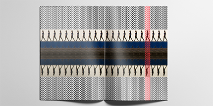

This project is a course project, the objectives of which is solely using a single image, a single line of text, and one accent color to create interesting graphic designs as well as sequently communicate time and narritive in the service of a message or mood.
Time: Spring 2015
Dimension: 8.5"x11"
Software: Photoshop, inDesign